Aujourd'hui, nous allons parler d'un aliment qui fait partie de notre vie quotidienne depuis plus de 10 000 ans ! Cela peut étonner, mais l'histoire du pain, c'est une histoire qui commence à une époque très lointaine, à partir de farines de céréales sauvages, ancêtres du blé domestiqué (orge, millet et seigle d'abord, puis épeautre et blé). Le pain est un aliment universel : de nos jours, tous les Pays du monde connaissent dans leurs tradition au moins une forme de pain.
De la Mésopotamie aux tables du monde entier, le pain a été le symbole de la culture, de l'histoire et de l'anthropologie, de la faim et de la richesse, de la guerre et de la paix. Non seulement cette nourriture en apparence simple apporte avec elle une histoire qui a fusionné avec celle des civilisations, mais elle a également été un aliment de base, indispensable à la survie des peuples.
De nombreux archéologues, anthropologues et historiens ont étudié l'origine du pain. Ces dernières années, les équipes de chercheurs de l'universités de Copenhague, de Londres et de Cambridge ont travaillé sur les fouilles de la période du Natoufien effectuées à Shubayqa, un site archéologique du nord-est de la Jordanie découvert au cours des années ’90. Les fouilles ont révélé les traces des communautés de la culture natoufienne, qui ont construit de petits villages servant de camps de base où les habitants revenaient périodiquement. Les restes d'un foyer fournissent la première preuve que le pain a été fait il y a quatorze mille ans, et quatre millénaires avant le début de l'agriculture... Lire plus
 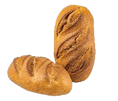
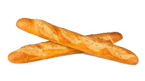
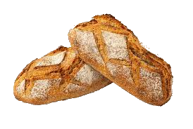
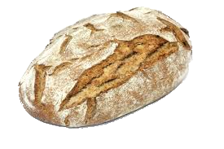
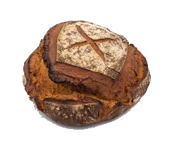
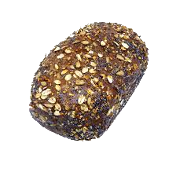
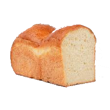
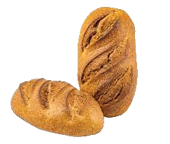
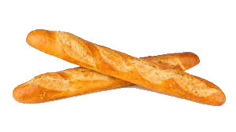
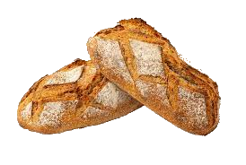
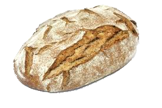
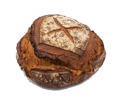
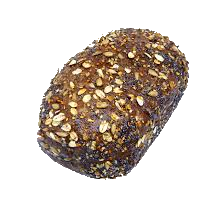
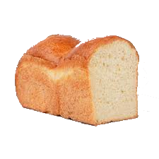